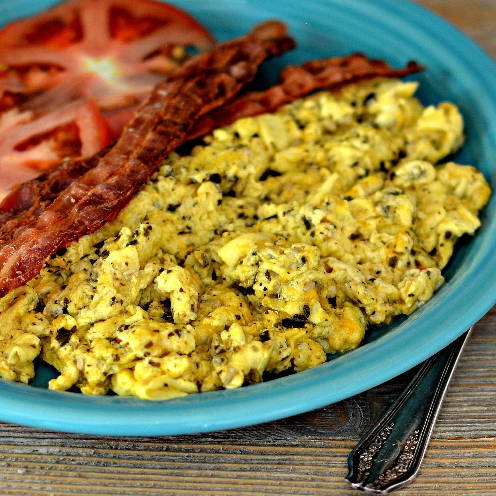

Green Eggs and Toast

Description
This beautiful blend of flavors combines the savory tang of pesto
with the never ending sweetness of Hawaiin rolls to create a truly
delicious breakfast. The pesto also expertly disguises the awful
taste that eggs naturally have.
Ingredients
- 5 Large Eggs
- Tablespoon of Pesto
- 3 Hawaiin Rolls
Steps
-
Mix together eggs in a bowl along with pesto.
-
Split Hawaiin rolls in half and put in oven on broil.
-
Scramble eggs in a pan until solid and take out Hawaiin rolls
when browned.
Link back